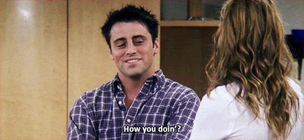

Best AI Website Creator
I was fourteen when my mother taught me how to be rich and happy. I just didn't know that's what she was teaching me.
I'd lost a big wrestling match. A match I should have won. I'd beaten this guy before. This time, I didn't. I was angry. I felt cheated.
My mother sat me down and asked me why I didn't win.
I gave her the usual excuses. Bad calls. Bad luck. Bad day.
She listened. Then she said something I'll never forget: "Maybe he just wanted it more. Maybe he pushed himself harder than you did. Maybe he was willing to go further than you were."
I started to argue. She stopped me.
"You can beat him next time if you're willing to work harder than he does and earn the win. But if you're not willing to do the work, why not enjoy the experience?"
She let that sit for a moment. Then she continued.
"The work requires giving up time and sacrificing other interests. If you're not willing to do that, you have no right to the title. Instead, decide what you're willing to earn. Then enjoy the consequences. Because that was your goal."
I sat there processing what she'd said. She wasn't consoling me. She wasn't letting me off the hook. She was giving me a choice.
Did I want to win? Really? Was I willing to sacrifice everything else to get there? Or did I want something different?
I realized I didn't want to win that badly. I wanted to have fun. I wanted to enjoy the training, the travel, the competition. Losing was fine if I enjoyed everything that came with it.
I chose satisfaction over resentment. I decided what I was willing to invest and accepted the results of that investment.
That conversation changed how I moved through the world. I stopped measuring success by outcomes I wasn't willing to earn. I started measuring it by whether I was satisfied with what I chose to invest.
The Mode of Travel
Years later, I walked into a pub in Galway with my ears on search for live music.
I'd been wandering around town, following sounds, chasing the real voice of Ireland. I heard a band and shyly made my way inside. To the side of the bar was a small stage with a narrow dance floor in front of it. Around the corner were some tables. The place was packed. No seats at the bar. No open tables.
I thought I'd sneak across the dance floor to see if there was space around the corner. There wasn't. So I stopped. Right there on the dance floor. And the band started playing a song I'd never heard.
"A Satisfied Mind."🎵🎵🎵
They credited it to Bob Dylan. I pulled out my phone and recorded their performance. The band was so Irish, so fulfilling in every way. The kind of moment you know matters even while it's happening.
I fell in love with the song immediately. Not because it taught me something new. Because it named something I knew since I was fourteen.
When I shared it with my wife later, she listened quietly. Then she said: "That will be the song we play at your funeral."
.
The Richest Man in the World
I didn't know then how often "A Satisfied Mind" has been sung or how many artists have covered it over the years. I thought I'd discovered something rare. In a way, I had. Not the song itself, but the recognition that someone else understood what my mother had taught me.
The song was written in the 1950s. It came from the simple wisdom of Red Hayes' mother and the title from his father-in-law, who said "the richest man in the world is the man with a satisfied mind."
That line stopped me cold when I heard it. Because it was exactly what my mother had been trying to tell me on that day after the wrestling match.
Wealth isn't about what you win. It's about what you choose to value.
The song opens with a question about envy. How many times have you wished you had someone else's money, someone else's life, someone else's circumstances? The question assumes we all do it. We all look around and think someone else has it better.
But the comparison itself is the trap. The dissatisfaction isn't about what we lack. It's about using the wrong measurement.
My mother knew this. If I measured success by the wrestling title I wasn't willing to earn, I'd always feel cheated. But if I measured it by whether I enjoyed the journey, I'd always be satisfied.
"How Are You?" And What We Hide When We Answer
"How are you?"
"I'm fine."
We've said it a thousand times. Maybe ten thousand. The script runs so smoothly we don't notice we're following it. The question isn't really a question. The answer isn't really an answer. It's social lubrication, a way to acknowledge someone without stopping the machinery of the day.
I'm not here to condemn the script. Sometimes "fine" is the right answer. Sometimes it's efficient. Sometimes it's true.
But what happens when we use it without thinking? When "fine" becomes the default setting? When we stop checking in with ourselves because we've already told everyone else, and maybe ourselves, that everything's good?
The auto-response isn't just words. It's a choice. And like all choices, it has consequences.
Here's what my mother taught me: If I'm not willing to admit what I actually want, I can't choose whether to pursue it. And if I can't choose, I have no right to be angry about the results.
The automatic "I'm fine" prevents that choice. It lets me pretend I'm satisfied when I'm not. Or worse, it lets me pretend I'm dissatisfied when I've actually chosen exactly what I have.
Once I Was Winning, Now I've Lost Everything
The narrator in "A Satisfied Mind" tells a story of catastrophic loss. Everything material, gone. The kind of loss that should destroy someone's happiness, their baseline, their entire sense of self.
And yet: "I'm richer by far with a satisfied mind."
This is the uncomfortable truth the song forces us to face. Happiness isn't a consequence of circumstances. It's a decision about perspective.
I feel high or low based on a given perspective. Your broken knee doesn't hurt at all when you're paralyzed. Your headache disappears when you see the sunshine. Your frustration with traffic evaporates after a comfortable commute and your favorite podcast. The events didn't change. Your frame did.
This is what "I'm fine" can obscure. If I default to "fine" without checking in, I lose the ability to make that choice consciously. I'm on autopilot. And autopilot doesn't distinguish between what's working and what's not.
The narrator in the song didn't lose the ability to be happy when he lost everything. He lost the illusion that happiness depended on having everything. And in that loss, he found something more valuable: the knowledge that satisfaction comes from within, not from without.
I didn't lose the wrestling match because of bad luck. I lost it because I wasn't willing to invest what was required to win. Once I accepted that, once I chose satisfaction with my actual investment rather than resentment about the outcome, I became richer. Not in titles or trophies. In peace.
Money Can't Buy Back Your Youth When You're Old
The song moves from personal testimony to universal truth. Money can't buy back time. It can't buy genuine friendship. It can't buy love that lasts.
This matters because it exposes the lie beneath our automatic responses. When I say "I'm fine" without thinking, I'm often measuring myself by the wrong standards. I'm counting external markers (money, status, achievement) and wondering why they don't add up to happiness.
There's research that backs this up. A study measured happiness over time in people whose lives changed dramatically: lottery winners, car accident victims, new parents. The findings showed that over time, almost everyone returned to their baseline level of happiness regardless of whether they won the lottery or became paralyzed. The initial spike or crash levels out.
The lottery winner learns to live with wealth. The accident victim learns to live without legs. The new parent learns to function without sleep. Happiness isn't a permanent state achieved through circumstances. It's a baseline we orbit around.
But here's what the study also revealed: The baseline itself can shift. Not through external events, but through internal decisions. The person who loses everything but chooses a new perspective can end up at a different baseline than before.
This is what the song means when it says the narrator is "richer by far." He didn't gain more money. He gained a different way of measuring wealth. And that shift in measurement changed his baseline.
Baseline happiness has nothing to do with an average of previous circumstances. The baseline is the state of mind I choose and keep choosing. I reach the baseline from perspective, not from events.
My mother gave me the tool to shift my baseline at fourteen. She showed me that I could choose what to value and then enjoy the consequences of that choice. The wrestling match didn't determine my happiness. My response to it did.
A Friend I Can Greet With a Handshake Is Worth More Than Gold
The song names what actually matters: connection, presence, genuine relationship. Not the performance of relationship. Not the social script. The real thing.
This is where the automatic "I'm fine" becomes most dangerous. When I use it as a shield, I prevent real connection. The script protects me from vulnerability, but it also prevents intimacy. Nobody knows how I'm actually doing because I've never told them.
My mother had another saying: "The mask soon becomes the face." It's the idea behind "fake it till you make it." If I act happy long enough, I might actually become happy. The performance can shape the reality.
But this isn't manifestation. This isn't "The Secret." I don't believe you can wish things into existence or that the universe rewards positive thinking with material outcomes. That's magical thinking.
What I do believe is simpler. If I choose to act satisfied, if I consistently reinforce that perspective, my baseline shifts. Not because I'm manifesting satisfaction, but because I'm practicing it. The mask becomes the face not through magic, but through repetition and choice.
The song knows this difference. A friend you can greet with a handshake, genuine and present and honest, is worth more than all the gold you could accumulate while pretending everything's fine.
My mother didn't let me pretend. She made me face the question: What do you actually want? And are you willing to earn it? That honesty, that refusal to let me hide behind excuses, was worth more than any wrestling title.
If I'm in a horrible situation because of my choices (committed manslaughter in a DUI, sitting in jail), I can still be happy. Not because the situation is good, but because I chose to see the lesson and move forward. The situation doesn't define my emotional state. My response to it does.
But I can't choose that response if I'm still running the script. I can't change my perspective if I haven't admitted what it currently is.
When Life Has Ended, My Time Has Run Out
The song ends with death. The ultimate test of the philosophy.
When everything is stripped away (achievement, possessions, status, even time itself), what remains? Can I face the end with a satisfied mind?
This is the question beneath every "How are you?" We're not just asking about the moment. We're asking about the trajectory. Are you building toward something that matters? Or are you just maintaining the performance?
The story of Job from the Bible illustrates this perfectly. Job lost his family, his health, his wealth. Everything. His suffering was complete and seemingly undeserved. And yet, his perspective (his refusal to curse God, his insistence on finding meaning even in catastrophe) gave him a new chance at a satisfied life. The circumstances were fanatical and insane, but his perspective gave him agency.
The baseline shifted because he chose it to shift.
Red Hayes, who wrote "A Satisfied Mind," died on stage in 1973 while touring. He lived the song. And Johnny Cash, who sang it from the 1950s onward, kept working on the song until he got a performance he felt was the best he could do. Cash understood what the song was really about. It wasn't just a nice sentiment. It was a life philosophy. A test of whether the satisfaction you claim is real or just performance.
When your time runs out, will you leave this world with a satisfied mind? Not because everything went well. But because you chose to see what mattered.
My wife knew this when she said the song would play at my funeral. She wasn't planning my death. She was naming my life. The mode of travel. The way I move through the world. Satisfied. Grateful. Present. The lesson my mother taught me when I was fourteen.
The Responsibility Is Mine
Therefore, I should take responsibility for my own happiness. It's empowering, not oppressive.
If happiness were entirely determined by circumstances, I'd be a victim of fate. If it were determined by other people, I'd be at their mercy. But if happiness is a decision (a perspective I choose), then I have agency.
This is what "A Satisfied Mind" teaches. The narrator didn't wait for circumstances to improve. He didn't wait for someone to rescue him. He changed his measurement of wealth and discovered he'd been rich all along.
This is what my mother taught me. I could choose to resent losing the wrestling match. Or I could choose to enjoy the experience I'd actually invested in. The choice was mine. The responsibility was mine.
I cannot make problems go away with a declaration. Saying "I'm happy" doesn't erase suffering. But I can reinforce my chosen perspective. I can decide what I want to see.
This is the difference between reacting and responding. Reacting is automatic. Responding is deliberate. Reacting happens to me. Responding happens through me.
When someone asks, "How are you?" I can react with the script. Or I can respond with intention. The response might still be "fine." But it won't be a lie. It'll be a decision.
The Mask and the Baseline
The mask is what I show the world. The baseline is what I've trained myself to return to. The mask can influence the baseline, but it can't replace it.
If I put on a mask of happiness without doing the internal work (without actually choosing a perspective that supports that happiness), the mask will crack. I'll feel the dissonance. The performance will exhaust me.
But if I choose the perspective first, the mask becomes unnecessary. I'm not performing. I'm just being.
The song doesn't tell us to perform satisfaction. It tells us to find it. To build it. To choose it. And then, once we've chosen it, to live it so completely that no one questions whether it's real.
Because it is real. Not because circumstances made it so. But because we decided it would be.
The Path from Satisfaction to Happiness
Here's what I've come to understand: Satisfaction isn't quite happiness. But it's the path to it.
Satisfaction means I've removed envy and regret. I'm not wishing I had someone else's life. I'm not resenting the outcomes I wasn't willing to earn. I've accepted what I chose to invest and I'm grateful for the experience that choice created.
Once envy and regret are gone, gratitude appears. I can see what I actually have instead of what I'm missing. I can appreciate the journey I committed to instead of mourning the one I didn't.
And right after gratitude comes happiness. Not the fleeting kind that depends on circumstances. The steady kind that comes from choosing satisfaction over and over until it becomes my baseline.
This is the progression: Choose satisfaction. Remove envy and regret. Find gratitude. Arrive at happiness.
The song captures this perfectly. The narrator lost everything but found he was "richer by far." Not because he manifested wealth or wished hard enough. Because he removed envy (stopped comparing himself to others) and removed regret (accepted what happened), which led to gratitude (recognized what he still had), which produced happiness (a satisfied mind).
Decide what you're willing to earn. Then enjoy the consequences.
My mother gave me this formula when I was fourteen. The song gave me the words to describe it decades later.
You're rich when you stop measuring wealth by what you don't have and start measuring it by whether you're satisfied with what you chose to invest. You're happy when you stop resenting outcomes you weren't willing to earn and start enjoying the journey you actually committed to.
This isn't toxic positivity. It's not pretending problems don't exist. It's recognizing that your response to problems is where your power lives.
"How Are You?"
The question isn't the problem. The script isn't the problem. The problem is when I stop noticing I'm following it.
Happiness is a responsibility, a choice I make every day. Every moment. I decide what lens to use. I decide what story to tell myself about the day I'm having.
Sometimes that means admitting I'm not fine. Sometimes it means realizing I am. But it always means asking the question for real.
Because if I don't ask, I'll never know. And if I don't know, I can't choose.
And if I can't choose, I'm not living. I'm just following the script.
What That Dance Floor Confirmed
I still have that recording from Galway. The audio isn't great. The band is a little off-key in places. The crowd noise sometimes drowns out the lyrics.
But it's perfect. Because it captures the moment I heard my mother's lesson reflected back to me in a song written by someone else's mother decades before I was born.
The song came from the wisdom of Red Hayes' mother and the words of his father-in-law. It's been covered by dozens of artists over the years. Bob Dylan didn't write it, but he sang it. So did Johnny Cash, Porter Wagoner, Jeff Buckley, and countless others.
They all understood what the song was really saying. The same thing my mother was saying when I was fourteen.
The richest person in the world is the one with a satisfied mind.
Not the one who says "I'm fine" without thinking.
Not the one who resents outcomes they weren't willing to earn.
The one who chose satisfaction and meant it.
That's how you be rich and happy. You decide what you're willing to invest. Then you enjoy what that investment produces.
My mother taught me that at fourteen. The song reminded me of it in Galway. And I've been trying to live it ever since.
Next Time We Dance
P.S. Finding that song in a Galway pub was a moment that mattered, but I almost missed it entirely.
For years, "I'll go to Ireland someday" was one of my favorite scripts, right alongside "I'm fine". I'd said it so often I stopped noticing I was just following a script. Then one night, sitting in a bar, a good friend called me a liar. He said I wasn't just lying to him; I was lying to myself.
He was right. I was admiring the music from the sidelines, but I wasn't willing to invest in the ticket. So, right there in front of him, I pulled out my phone and booked the flight.
My mother taught me to choose satisfaction by deciding what I'm willing to earn. But that's only half the lesson. Life is about dancing. Appreciating the music and the good vibes counts, but if you don't get on the dance floor, life will pass you by.
Next time, we'll talk about what it means to actually dance.
Best AI Website Creator